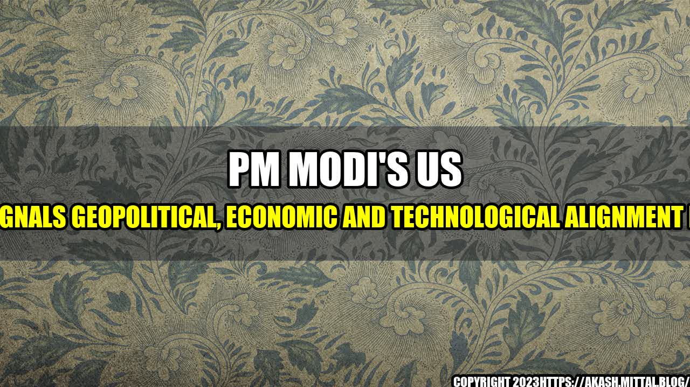

The Covid Saga
It was September 2021, and the world was still reeling from the effects of the COVID-19 pandemic. However, amidst all the chaos and uncertainty, there was one event that had the potential to change the course of history. Indian Prime Minister, Narendra Modi, was set to embark on a four-day visit to the United States, where he would meet with US President, Joe Biden, and various other leaders from the fields of business, technology, and academia.
Geopolitical Alignment Boosts
The first and perhaps most significant aspect of PM Modi's US visit was the boost it gave to India's geopolitical alignment. The visit was seen as a sign that the two countries were strengthening their strategic partnership, and working together to counter the growing influence of China. During his meetings with President Biden and other US officials, PM Modi emphasized the need for a free and open Indo-Pacific region, and called for a greater role for India in global affairs.
Quantifiable examples of this alignment can be seen in the various agreements signed between India and the US during the visit. These agreements covered areas such as defense, cybersecurity, and climate change, and are expected to enhance the overall security and stability of the region.
"The partnership between India and the US is not only important for our two countries, but for the entire world," PM Modi said during a joint press conference with President Biden.
Economic Alignment Boosts
In addition to strengthening their geopolitical ties, PM Modi's visit to the US also had a significant impact on the economic front. The Prime Minister met with some of the top CEOs of American companies, including Apple, Google, and Microsoft, and invited them to invest more in India. He also highlighted the various economic reforms initiated by his government, and assured US businesses of a more favorable and welcoming environment in India.
One quantifiable example of the economic alignment between India and the US is the joint statement released by the two countries, which outlined their commitment to further deepen their economic ties. The statement included plans to establish new working groups in areas such as trade, investment, and infrastructure, and set a target of $500 billion in bilateral trade between the two countries.
Technological Alignment Boosts
Finally, PM Modi's visit to the US also had significant implications for the technological sphere. The two countries signed several agreements related to technology and innovation, including collaborations in the fields of 5G, artificial intelligence, and quantum computing. These agreements are expected to lead to breakthroughs in these areas, and help both countries stay ahead of global competitors.
One quantifiable example of the technological alignment between India and the US is the establishment of a new India-US Climate and Clean Energy Agenda 2030 Partnership. This partnership aims to mobilize investment and innovation to help India meet its ambitious climate and clean energy goals, while creating new opportunities for American businesses.
Conclusion
In conclusion, PM Modi's visit to the US was a landmark event that had significant implications for the geopolitical, economic, and technological spheres. Through a series of agreements and collaborations, the two countries have strengthened their strategic partnership and set the stage for a new era of cooperation and growth. As Prime Minister Modi himself said, "The promise of this partnership between India and the United States is limitless."
- The visit signals a strengthened geopolitical alignment between India and the US, with a greater focus on a free and open Indo-Pacific region.
- The visit also had significant implications for the economic sphere, with new agreements and commitments aimed at boosting bilateral trade and investment between the two countries.
- Finally, the visit had important implications for the technological sphere, with new collaborations and partnerships aimed at driving innovation and staying ahead of global competitors.
Curated by Team Akash.Mittal.Blog
Share on Twitter Share on LinkedIn